5.5. How to do operations on superconducting qubits#
5.5.1. Measurement#
In this lecture I will explain how we can perform measurement of superconducting qubits. At the end of every quantum algorithm, the computation result has to be obtained by performing measurement of the qubits. And, as dictated by the laws of quantum mechanics, any superposition states are projected into well-defined zeros and ones. A transmon qubit, as depicted here, can be measured via a readout resonator that is coupled to it. The resonance frequency of the resonator is quite far away from the qubit transition frequency, on the order of GHz.
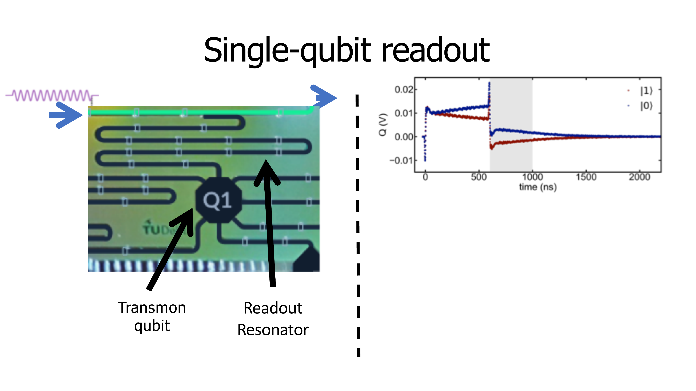
However, due to the coupling, there is a shift in the resonator’s frequency depending on the qubit state. This shift is evidenced here by the measured resonator transmission dips of the qubit in the ground state and the excited state. This shift is typically on the order of a few megahertz, three orders of magnitude smaller than the detuning.
We can observe this shift and thereby the qubit state, by injecting the resonator with a pulse near the resonator frequency. The pulse, as shown here, is reflected by the resonator. Here, we show the output voltage as a function of time for the qubit in the ground state and the excited state, which clearly look different.
Hence, we are able to distinguish and measure the two different qubit states. The traces I’ve just shown you, look very clean and distinguishable as they are averaged over thousands of measurements.
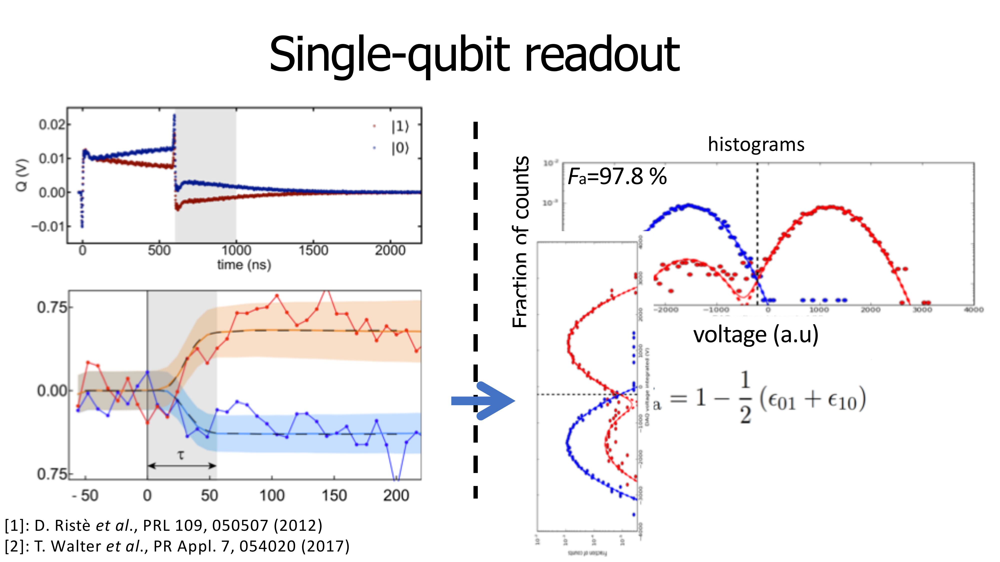
However, for most real quantum protocols, we require to discern the qubit state in a just single run. But to avoid disturbing our precious quantum system, we can only use readout pulses that consist of a couple of photons. At these power levels, in the order of just a few femto Watts, we are struggling to distinguish the different quantum states as the signal is hampered by quantum noise, as depicted here.
To quantify how well qubit measurement is performing in the presence of this noise, we record the integrated voltage of thousands of individual traces. By plotting these individual shots in the histograms, we extract the fidelity of the measurement.
The fidelity expresses the probability that the measurement returns the right outcome averaged over the two possible qubit input states. Epsilon01 expresses the probability for erroneously getting outcome 1 for a ground state input and Epsilon10 vice versa. In this case, aided by the world’s lowest noise, superconducting amplifiers we can achieve a fidelity close to 98%. I’ve just shown you the readout of one qubit. Of course, a full quantum computer consists of many quantum bits and these quantum bits all have to be read out at the same time. To allow this simultaneous readout, we couple each qubit to its own readout resonator and choose the lengths of the resonators such that they resonate all at a distinct frequency. Just like the different strings in a piano. By next sending down a pulse that is the sum of multiple components, in this case two, each tuned to its own readout resonator, we can probe multiple readout resonators at the same time.
Each component will only be picked up by the targeted resonator. In the analysis of the output signals, we again separate the two different frequency components. Here, we show the readout results for qubit 1 for each of the four possible two-qubit basis states, indicating that the signal practically only depends on the state of the targeted qubit, separating 00 and 10 from 00 and 11.
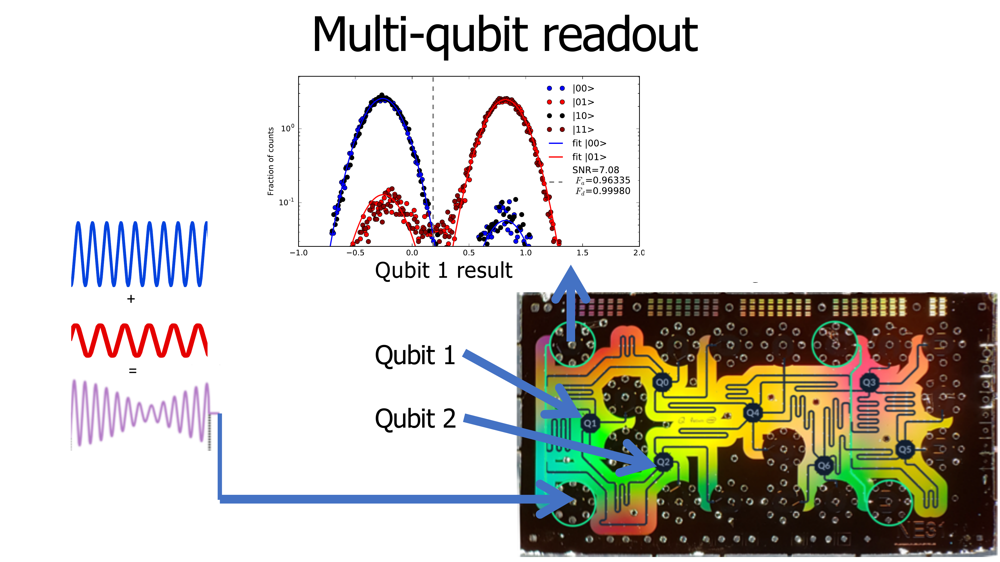
Dually, we here show the readout results for the other qubit, which separate 00 and 10 from 00 and 11. You might now be able to imagine how this readout scheme can be extended to measure ever increasing numbers of qubits.
Here, we depicted a seventeen-qubit device where we play the simultaneous readout trick using seventeen readout resonators divided over three different input and output lines.
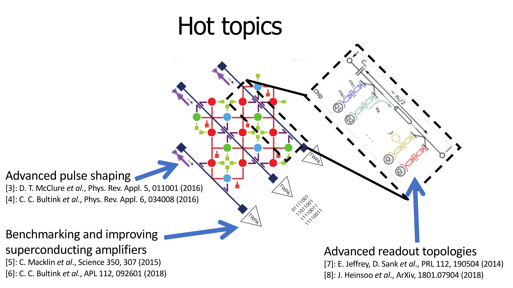
This might sound to like a finished story. However, there are many improvements to be made still to get to a fully scalable quantum computer. Exemplary topics that are currently being addressed in research, and which might also be attractive for additional reading are: Advanced readout pulse shaping to quickly populate and depopulate the readout resonators to speed up the readout. Second, superconducting amplifiers to suppress noise in the readout amplification chain and methods to quantify their performance. And lastly we work on advanced readout topologies. In this case, using multiple cascaded readout resonators per qubit, to increase the flux of photons and further speed up the readout.
Main takeaways
A transmon qubit can be measured via a readout resonator that is coupled to it. Depending on the qubit state, there will be an observable shift in the resonator frequency.
To quantify how well qubit measurement is performing in the presence of this noise, we record the integrated voltage of thousands of individual traces. By plotting these individual shots in the histograms, we extract the fidelity of the measurement.
The highest achievable fidelity aided by the world’s lowest noise, superconducting amplifiers is 99%.
To allow simultaneous readout for multiple qubits, each qubit will be coupled to its own resonator with unique lengths and thus readout frequency.
5.5.2. Single qubit gates#
Here we will show how we control the state of a single superconducting transmon qubits, that is, doing so-called single-qubit gates. The state of a single qubit can be visualized on the Bloch sphere, with the ground and excited state on the poles and the other points on the surface corresponding to quantum superpositions.
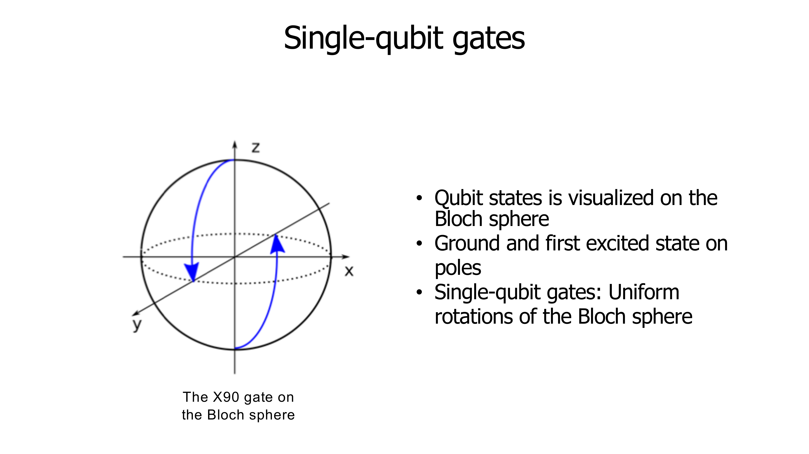
Single-qubit gates are then rotations of the Bloch sphere, for instance, here the X90 gate, which converts the ground and excited states into superpositions. We use the physical effect called Rabi oscillation:
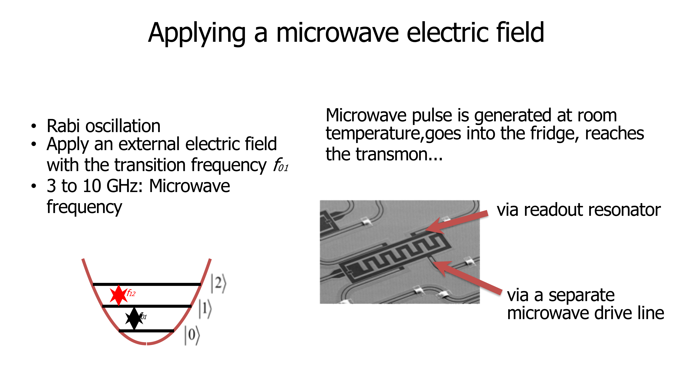
We change the qubit state by applying an external oscillating electric field at the qubit frequency, corresponding to the energy difference between the ground and excited state.
That frequency is usually in the microwave range, between 3 and 10 GHz. To apply the electric field, we need a microwave line that ends next to the transmon. We can use the same line that is also used for measurements, about which you will hear more in the next videos. Or, on larger devices with many qubits, we often make a dedicated drive line for each qubit. With this, we can generate the electric field close to only one selected qubit. Let’s see how the oscillating field affects the qubit state. When we apply it, it drives the qubit from the ground to the first excited state and back.
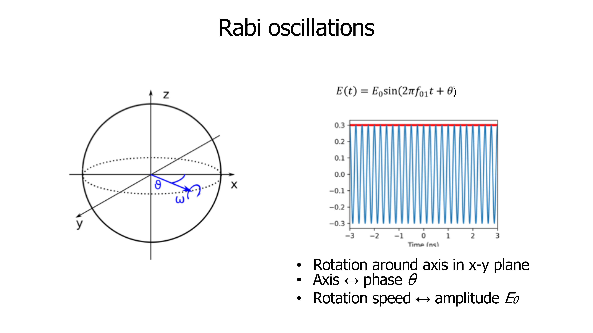
On the Bloch sphere, this looks like a rotation with constant speed. The axis of rotation always lies in the x-y plane. We can control where exactly it lies by changing the phase of the applied field: A sine wave leads to a rotation around the x-axis, while a cosine with 90 degrees phase offset will induce a rotation around the y-axis. On the other hand, the speed of the rotation is proportional to the amplitude of the electric field. In order to perform a desired gate, for instance a rotation by 90 degrees around the x-axis, we thus need to apply a short pulse with the correct phase, amplitude and length.
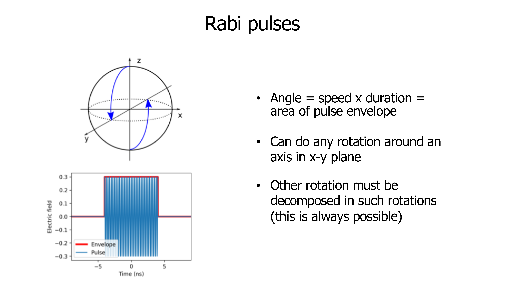
The rotation angle is determined by the product of length and amplitude, that is, by the area under the pulse envelope. This way, we can perform any rotation with the axis in the x-y plane. If we want to rotate around another axis, which does not lie in the x-y plane, we have to decompose it.
It turns out that any single-qubit gate can be performed using no more than three microwave pulses in sequence. Of course, we want to make the pulses as short and strong as possible, to be able to do quantum computations quickly.
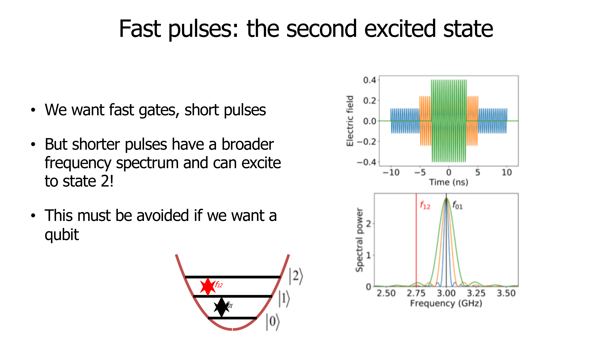
However, the shorter the pulse, the more frequency components it has besides the transition frequency f01. We can see this by looking at the spectral decomposition of the pulse. Unfortunately, that means that if we make the pulses shorter and shorter, at some point, the spectrum is so broadthat the pulse drives oscillations not only between the states 0 and 1, but also 1 and 2! Then, the transmon does not work as a qubit anymore, since three transmon states are involved, and the nice Bloch sphere rotation picture breaks down. We must avoid this situation, and this limits us in making the pulses too short. To push the limit of how short we can make the pulse, instead of a square pulse, we need a pulse which is well localized in time and also frequency.
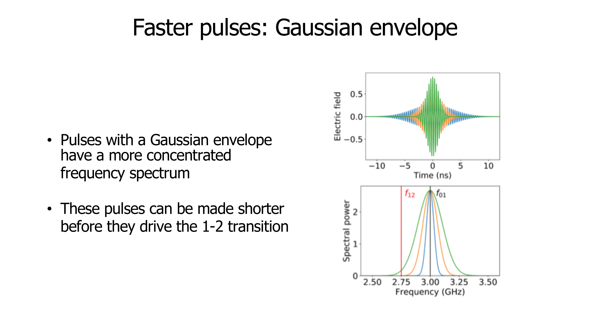
A much better choice is a pulse with a Gaussian shaped envelope. It has the same area, but affects the 1-2 transition much, much less. Using a technique called derivative removal by adiabatic gate, or DRAG, we can push the limit further:
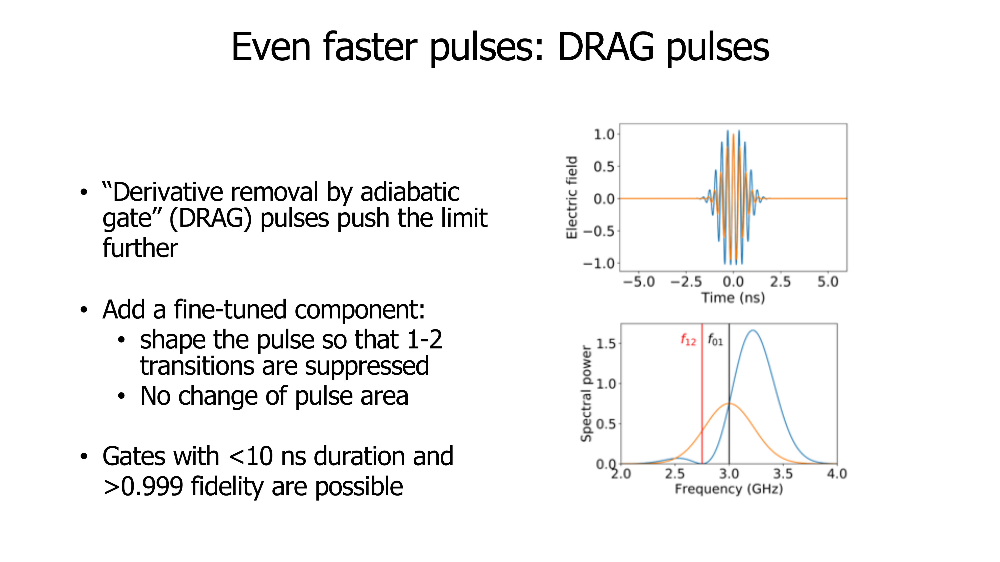
By superimposing a fine-tuned out-of-phase component with an envelope proportional to the derivative of the original pulse, the rotation angle is unchanged, but the transitions to the 2 state are actively suppressed. Using this technique, pulse lengths can be reduced to well below 5 ns without the second transmon state being a concern. This concludes our quick look at how we control the state of individual transmon qubits using microwave pulses. In the next videos, Niels and Adriaan will show you how we measure the transmon state, and how we change the state of a transmon depending on the state of another transmon, to perform larger calculations.
Main takeaways
Qubit operations are done using Rabi oscillation by applying an external oscillating electric field at the transmons qubit. Performing desired gates require a short pulse with the correct phase, amplitude and length. This way any rotation within the x-y plane can be performed.
The minimum duration of a pulse is limited due to the broadening of the frequency spectrum as pulses get shorter.
In case the frequency spectrum is to broad, not only oscillations between the 0 and 1 state occur, but also between 1 and 2.
To push the limit of this short pulse duration, a Gaussian shaped envelope is used in combination with a technique called Derivative Removal by Adiabatic Gate (DRAG).
5.5.3. Two qubit gates#
Interactions between qubits are controlled using two qubit gates. In transmen qubits the two qubit gate that is used to form a universal gate set. It’s the conditional phase gate also known as the C phase or C’s at gate.
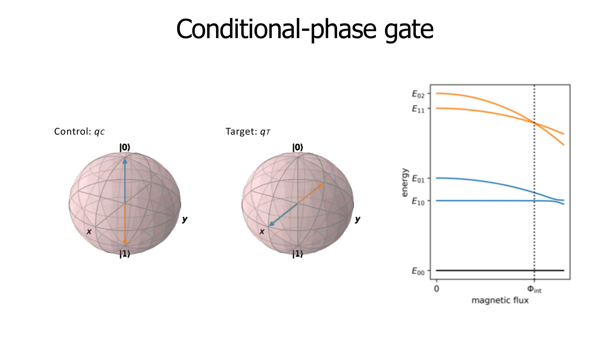
Applying a conditional phase gate to two qubits causes the target qubit to acquir by a radiance of phase based on the state of the control qubit. As an example let us consider two qubits. A control qubit QC starting in either the ground or the excited state and a target qubit QT starting in the plus state. When the control qubit is in the ground state and we apply the C phase gate, there is no effect on the target qubit. However, when the control qubit is in the excited state, the target qubit will acquire by a radiance of phase. In transfer qubits the C phase gate is implemented by tuning in and out of resonance with an interaction in the two excitation manifolds. To understand how to perform such C phase gate we will look at what mediates the interaction, how qubits can be tuned in and out of resonance, wooden interaction, and why this causes the qubits to accumulate phase.
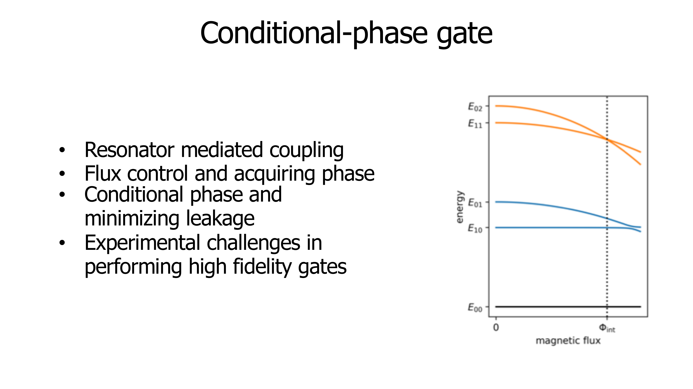
How to use this interaction to perform a C phase gate while minimizing leakage out of computational subspace. And finally what the experimental challenges are when implementing high fidelity gates. In superconducting transmen qubits to qubit gates are based on a transversal cubed cubed coupling.
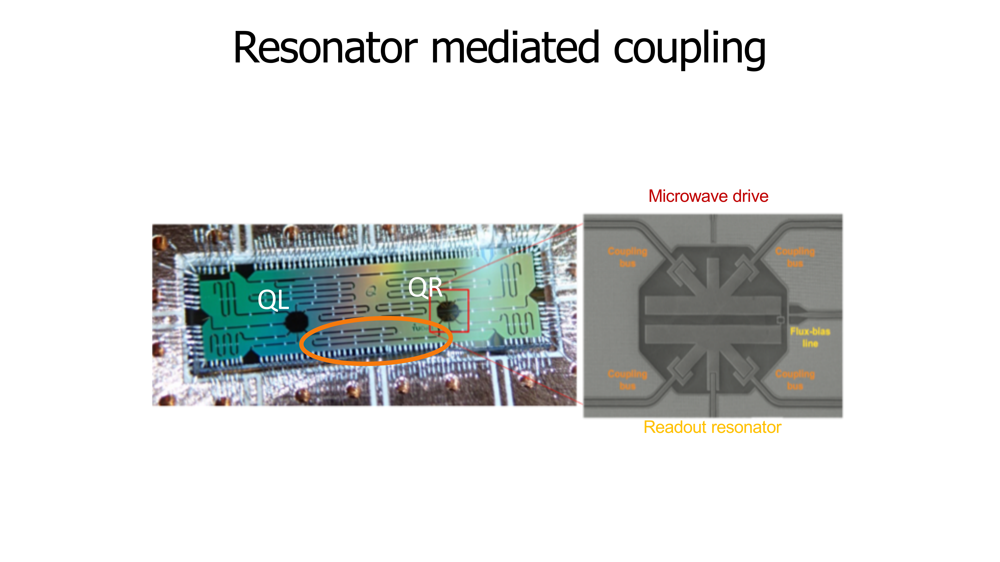
This coupling is mediated through a coupling resonator. Because the interaction is mediated by a coupling resonator, it is possible to couple physically separated qubits making a room for other components on the chip such as readout resonators. To be able to tune in and out of resonance with the interaction, the transition frequency of a transplant qubit must be controlled.
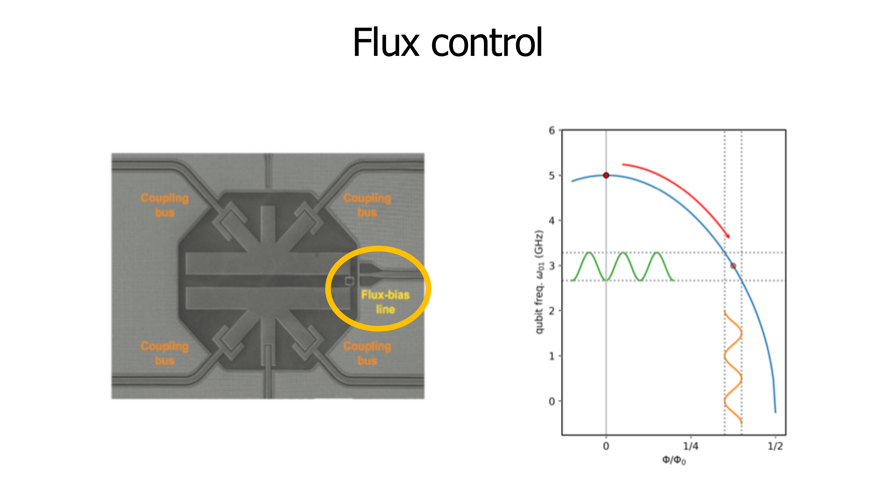
By applying a current to the flux bias line, the amount of flux through the squit loop of the transport changes, making it possible the control to cubits frequency. When a pulse is applied to the Flex bias line, the cubit is detuned from its operating frequency for the duration of the pulse. While the cubit is detuned face accumulates. To understand how this flux control can be used to perform a C phase case, let us take a look at the level diagram…
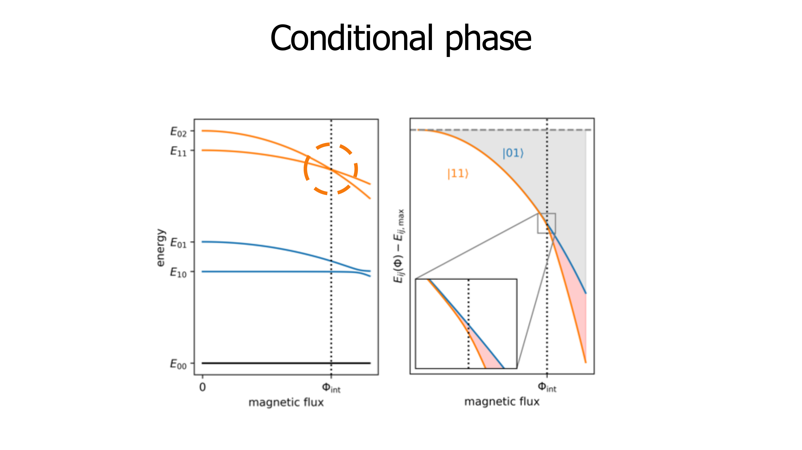
…of two transport cubit as a function of the flux through the target qubit. In this level diagram the subscripts denote the number of excitations in the control and target qubit respectively. The interaction that is used to perform a C phase gate isn’t avoided crossing between the 1-1 and 0-2 state. The amount of face that a target cute picks up is most evident when the 1-1 and all one level diagrams are overlaid. By expressing them in terms of the tuning with respect to their maximum energy. It can be seen that the detuning of the target qubit is different based on the state of its argument. This difference is marked in red over here. By detuning the qubits into the red region, it is possible to make the target qubit acquire a face conditional instead of control qubit. However, the interaction we are using, is an interaction between the 1-1 and the 0-2 state.
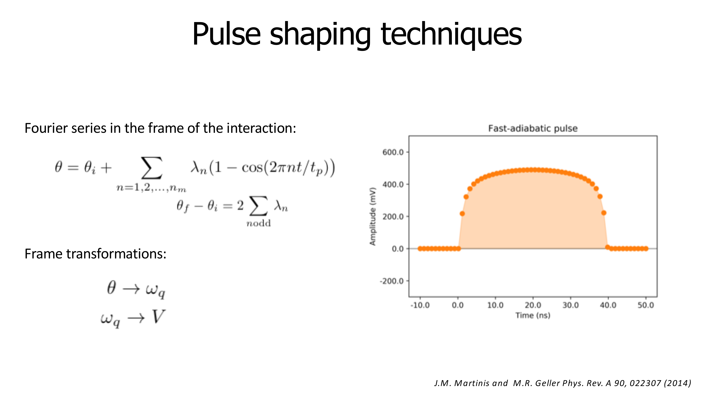
As the 0-2 state is not part of the computational subspace, we want to avoid any energy transfer to the state. This is typically done using a special pulse shape, known as a fast adiabatic pulse, that minimizes the leakage. This pulse shape can be expressed as a Fourier series in the frame of the interaction, which with knowledge of the system parameters can be converted first into a frequency and then into a voltage to be applied to the flux bias line. Because the conditional phase and the leakage depend on the exact trajectory of the qubit, flux pulsing base two qubit gates are highly sensitive to distortions of the pulse shapes. Distortions can be caused by electrical components in the signal path between the waveform generator and the qubit, such as filters and cables.
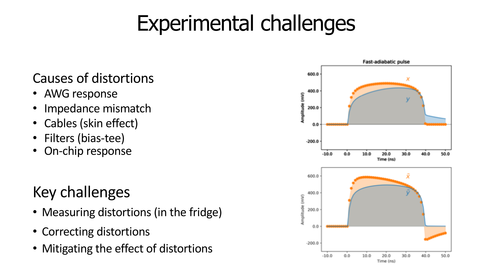
But even the own chip response causes distortions on the signal to qubit experiences. These effects are typically corrected by pre deserting, the waveform ex, with a filter designed to invert the assertions, turning into X-Tilted, so that the queuing experiences, not pulse Y, but Y-Tilted is equal to the intended waveform. The key challenge in flux pulsing based CZ gate is to correct for these distortions. This requires characterizing distortions that the qubit experiences when cooled down and correcting these with sufficiently high precision. At the same time, efforts are underway to become more resilient against these effects. Both by exploring new pulse shaping techniques and true innovations in a hardware. Thank you for your attention
Main takeaways
In transmon qubits, a the two qubit CPhase- or CZ-gate is used to form the universal gate set, which is implemented by tuning in and out of resonance with an interaction in the two-excitation manifold.
The qubit-qubit coupling in transmons is mediated through a coupling resonator allowing convenient physical separation between qubits.
Applying a current to the flux-bias line, the flux through the SQUID loop of the transmon changes allowing control of the qubit’s frequency.
To avoid energy transfer to undesired states, a fast-adiabatic pulse that minimizes leakage is used.
The key challenge in flux-pulsing based CZ-gates is correcting for distortions caused by electrical components in the signal path between the wave generator and the qubits.
5.5.4. Practice Quiz 9#
5.5.4.1. Question 1#
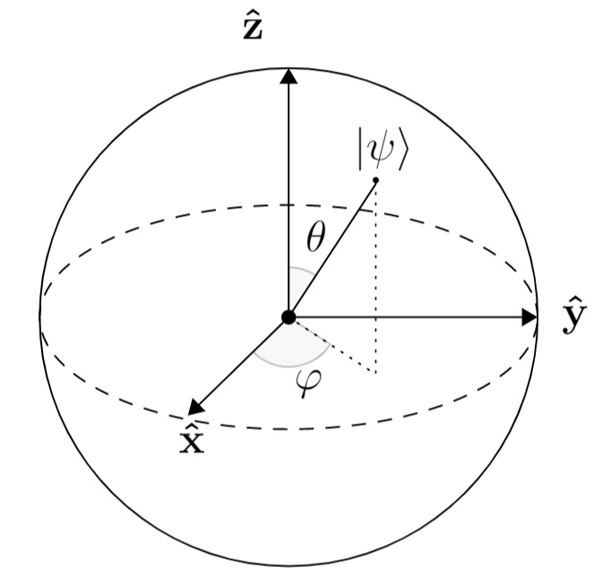
The Bloch sphere is a useful tool to visualize the state of qubit and the effect of single-qubit operations. What state ket \(\{\mid psi\} \mid\) corresponds to the state shown on the Bloch sphere below?
\(\cos \frac{\phi}{2}|0\rangle+e^{i \phi} \sin \frac{\theta}{2}|1\rangle .\)
\(\cos \frac{\phi}{2}|0\rangle+e^{i \phi} \sin \frac{\phi}{2}|1\rangle .\)
\(\cos \frac{\theta}{2}|0\rangle+e^{i \phi} \sin \frac{\theta}{2}|1\rangle .\)
\(\cos \phi|0\rangle+e^{i \theta} \sin \phi|1\rangle .\)
Correct answer
Explanation \(\cos \frac{\theta}{2}|0\rangle+e^{i \phi} \sin \frac{\theta}{2}|1\rangle .\)
5.5.5. Quiz 9: Operations on superconducting qubits#
Bell pairs
The Bell pairs are a certain set of entangled two qubit states. There are four of them, often denoted by \(\left|\Phi_{+}\right\rangle,\left|\Phi_{-}\right\rangle,\left|\Psi_{+}\right\rangle \&\left|\Psi_{-}\right\rangle\). All of these play a vital part in quantum information and networking, but \(\left|\Phi_{+}\right\rangle\)is used the most. It is the state \(\frac{|00\rangle+|11\rangle}{\sqrt{2}}\) and it is exactly this state that is often meant when scientist say ‘a Bell pair’.
In this quiz, we will investigate how to create this Bell pair on a transmon qubit chip.
5.5.6. Question 1: Bell pair creation#
A vital part in the creation of any entanglement is the use of a two qubit gate. Without such operations, entanglement is not possible. The two qubit gate that we use for Bell pair creation is the familiar CNOT gate.
We can implement the CPHASE gate (also known as the CZ gate) on the transmon qubits. This is of course different than the CNOT, but we can get from the one to the other using only single qubit operations. You can refer back to the ket notation video from module 1 to review 2 qubit operations. Also be sure to check quiz, because one of those questions might look very familiar (it is not quite the same though, so watch out!). Which of the following operations implements a CNOT (with the first qubit as the control qubit), using only a CZ gate and single qubit operations?
Hadamard on the first qubit both before and after the CZ
Hadamard on the second qubit both before and after the CZ
Pauli \(X\) on the second qubit both before and after the CZ
Pauli \(Y\) on the second qubit before the CZ and Pauli \(X\) on the second qubit after the CZ
Answer Correct: Exactly! This is a very often used identity in quantum circuitry. Hint (1 of 6): If you write out every step as a \(4 \times 4\) matrix, you can multiply those matrices and check if it equates to the CNOT operation.
Hint (3 of 6): An operation on the first qubit, while doing nothing on the second qubit, can be written down as the kronecker delta product. For instance, the Hadamard on the only the first qubit is:
Hint (4 of 6): Think about what the phase flip (Z gate) does on the \(|+\rangle\) and \(|-\rangle\) states. This is very much like the bit flip ( \(X\) gate) coming from the CNOT for another set of states. What set of states? Hint ( 5 of 6 ): So, you can perform the \(X\) gate using the \(Z\) gate, by first transforming your basis. From what to what basis? Hint ( 6 of 6 ): If the CNOT is a controlled bit flip ( \(X\) gate) operation, and the CZ is a controlled phase flip (Z gate) operation, you can perform the one by doing the other if you first transform your basis.
Answer Correct: Exactly! This is a very often used identity in quantum circuitry. Explanation If we investigate what a phase flip (Z gate) does on the \(|+\rangle=\frac{|0\rangle+|1\rangle}{\sqrt{2}}\) and \(|-\rangle=\frac{|0\rangle-|1\rangle}{\sqrt{2}}\) states, we see that the two are flipped. So the phase flip is essentially a bit flip in the \(\{|+\rangle,|-\rangle\}\) (Hadamard) basis. Now, that means that a CZ is the same as a CNOT (controlled bit flip) for the second qubit in the Hadamard basis. So if we transform the second qubit to that basis, perform the CZ, and transform that qubit back to the computational \((\{|0\rangle,|1\rangle\})\) basis, we have performed the CNOT. Transforming between the computational and Hadamard basis (and vice versa!) is done with the Hadamard matrix.
Only on the second qubit gives: \(I \otimes H=\left[\begin{array}{cc}1 & 0 \\ 0 & 1\end{array}\right] \otimes\left[\begin{array}{cc}1 & 1 \\ 1 & -1\end{array}\right]=\left[\begin{array}{cccc}1 & 1 & 0 & 0 \\ 1 & -1 & 0 & 0 \\ 0 & 0 & 1 & 1 \\ 0 & 0 & 1 & -1\end{array}\right]\). So the total expression becomes: \(\left[\begin{array}{cccc}1 & 1 & 0 & 0 \\ 1 & -1 & 0 & 0 \\ 0 & 0 & 1 & 1 \\ 0 & 0 & 1 & -1\end{array}\right]\left[\begin{array}{cccc}1 & 0 & 0 & 0 \\ 0 & 1 & 0 & 0 \\ 0 & 0 & 1 & 0 \\ 0 & 0 & 0 & -1\end{array}\right]\left[\begin{array}{cccc}1 & 1 & 0 & 0 \\ 1 & -1 & 0 & 0 \\ 0 & 0 & 1 & 1 \\ 0 & 0 & 1 & -1\end{array}\right]\), which is exactly the desired CNOT!
https://cdn.mathpix.com/snip/images/v3fxVJWrHKRKHn8oE3Ve7DZG5p9Cbv9EFxjQtgoaD14.original.fullsize.png
Correct answer & Explanation
If we investigate what a phase flip (Z gate) does on the
and $\( \mid-\rangle=\frac{|0\rangle-|1\rangle}{\sqrt{2}} \)\( states, we see that the two are flipped. So the phase flip is essentially a bit flip in the \)\( \mid{|+\rangle,|-\rangle\} \)\( (Hadamard) basis. Now, that means that a CZ is the same as a CNOT (controlled bit flip) for the second qubit in the Hadamard basis. So if we transform the second qubit to that basis, perform the CZ, and transform that qubit back to the computational \)\( (\{|0\rangle,|1\rangle\}) \)$
basis, we have performed the CNOT. Transforming between the computational and Hadamard basis (and vice versa!) is done with the Hadamard matrix. Only on the second qubit gives: $\( I\otimes H = \left[\begin{array}{cc}1 & 0 \\ 0 & 1\end{array}\right] \otimes\left[\begin{array}{cc}1 & 1 \\ 1 & -1\end{array}\right]=\left[\begin{array}{cccc}1 & 1 & 0 & 0 \\ 1 & -1 & 0 & 0 \\ 0 & 0 & 1 & 1 \\ 0 & 0 & 1 & -1\end{array}\right] \)\( So the total expression becomes: \)\( \left[\begin{array}{cccc}1 & 1 & 0 & 0 \\ 1 & -1 & 0 & 0 \\ 0 & 0 & 1 & 1 \\ 0 & 0 & 1 & -1\end{array}\right]\left[\begin{array}{cccc}1 & 0 & 0 & 0 \\ 0 & 1 & 0 & 0 \\ 0 & 0 & 1 & 0 \\ 0 & 0 & 0 & -1\end{array}\right]\left[\begin{array}{cccc}1 & 1 & 0 & 0 \\ 1 & -1 & 0 & 0 \\ 0 & 0 & 1 & 1 \\ 0 & 0 & 1 & -1\end{array}\right]\)$ which is exactly the desired CNOT!
In quantum computing, we always initialize qubits in the \(\mid 0\rangle\) state. So when creating a Bell pair, we start with two qubits in that state: $\( \left\mid\psi_{i n i t}\right\rangle=|0\rangle \otimes|0\rangle=\left[\begin{array}{l}1 \\ 0 \\ 0 \\ 0\end{array}\right] \)\( If we perform a Hadamard transform on the first qubit, we get the In matrix form, this is \)\( \lef\mid\psi_{2}\right\rangle=\sqrt{\frac{1}{2}}\left[\begin{array}{l}1 \\ 0 \\ 1 \\ 0\end{array}\right] \)$
Now that we are able to do a CNOT, we can create a Bell pair by applying the CNOT to the state \(\left|\psi_{2}\right\rangle\). The second qubit is bit flipped only if the first qubit is in the \(\mid1\rangle\) state, so we see that only the \(\mid 10\rangle\) part is ‘touched’ by the CNOT. We get: $\( CNOT \left\mid\psi_{2}\right\rangle=CNOT \sqrt{\frac{1}{2}}(\mid 00\rangle+\mid 10\rangle)=\sqrt{\frac{1}{2}}(\mid00\rangle+\mid11\rangle)=\left\mid\Phi_{+}\right\rangle \)\( Or in matrix form: \)\( CNOT\left|\psi_{2}\right\rangle=\sqrt{\frac{1}{2}}\left[\begin{array}{llll}1 & 0 & 0 & 0 \\ 0 & 1 & 0 & 0 \\ 0 & 0 & 0 & 1 \\ 0 & 0 & 1 & 0\end{array}\right]\left[\begin{array}{l}1 \\ 0 \\ 1 \\ 0\end{array}\right]=\sqrt{\frac{1}{2}}\left[\begin{array}{l}1 \\ 0 \\ 0 \\ 1\end{array}\right]=\left|\Phi_{+}\right\rangle \)$ Conclusion: to create a Bell pair on a set of transmon qubits, we need to perform one single-qubit operation (the Hadamard) and one multi-qubit operation (the CZ).
5.5.6.1. Question 2: The single qubit operation: the Hadamard#
The Hadamard matrix maps the computational basis \(\{\mid0\rangle,\mid1\rangle\}\) (the eigenvectors of the Pauli Z) to the Hadamard or \(X\) basis $\(\{\mid+\rangle,\mid-\rangle\}\)\( (the eigenvectors of the Pauli \)X\( ), and vice versa. If we transform the \)\(0\rangle\)\( to the \)\mid+\rangle\(, when looking at the Bloch sphere, this means that we rotate from the \)z\(-axis to the \)x\(-axis. This can be done on a transmon qubit by applying an alternating electric field to it, with a certain phase delay. Around what axis do we need to rotate to perform the Hadamard operation on the \)|0\rangle$ state? Look at the picture of the Bloch sphere and the rotational axis on the 3rd slide in the video to determine this axis.
X-axis
Y-axis
Z-axis
Hint (1 of 2): The [mathjaxinline] \ket{0} [matjaxinline] state is the +1 eigenstate of the Z operator. On the Bloch sphere, this means that it lies in the positive direction of the Z axis. Hint (2 of 2): Likewise, the [mathjaxinline] \ket{+} [matjaxinline] state is the +1 eigenstate of the X operator. On the Bloch sphere, this means that it lies in the positive direction of the X axis.
Answer
Correct:
If we rotate around this axis we can get from the z-axis to the x-axis. There is, however, still the matter of rotating clockwise or anti-clockwise. See the explanation (click ‘see answer’ button) for elaboration.
Explanation
If we look at the Bloch sphere, we see that going from the z-axis (where the state lies) to the x-axis (where the lies) means rotating around the y-axis. However, we do not yet have specified if we are rotating in the clockwise or anticlockwise direction.
Also, if we look at 3rd slide from the video with the Bloch sphere, we see that we can use either a phase offset of (lets call this option A) or (this is option B). Choosing this offset is als precisely choosing the rotational direction, as you can see in the slide. (For clarification: if you can’t see the rotational direction clearly in the video, it goes in the clockwise direction from the viewers perspective. Looking from the origin, it goes anti-clockwise.)
5.5.6.2. Question 3: Rotational direction#
We want to minimize the amplitude and length of the electric field pulse that we apply to the transmon.
Taking these things into consideration, what option for the phase offset is then the best option? These are the options as described in the explanation of the previous question. Press the ‘show answer’ button of the previous question if you have not already seen them.
Option A
Option B
Hint (1 of 3 ): We need to end up at the positive \(x\)-axis, coming from the positive \(z\)-axis. Next Hint Hint (2 of 3): Minimizing the amplitude and length of the electric field pulse means minimizing how far we rotate. Watch out, this is not the same as the phase \(\theta\) angle that defines the rotational axis as in the video! Hint (3 of 3): The two choices for the phase offset means two different distances that we need to rotate. One is 3 times the other!
Answer Correct: You can specify optional feedback like this, which appears after this answer is submitted. Explanation We can either rotate directly to the plus \(x\)-axis from the plus \(z\)-axis, or first rotate to the minus \(x\)-axis, then to the minus z-axis, and only then to the plus \(x\)-axis. The first choice is obviously the fastest one. If we look at the 3rd slide again, we see that the desired rotational direction is at a phase offset of \(\frac{1}{2} \pi\), or option \(A\).
5.5.6.3. Question 4: The CZ gate#
The two-qubit operation that we can use for transmon qubits, is, as mentioned before, the CZ gate. In the video on two-qubit operations on superconducting qubits, Adriaan mentions a problem in the implementation that needs to be strictly avoided. Which of the following is that problem? Check the box that applies.
Waiting too long, so that the target qubit gets flipped as well
Accidentally transferring the \(|0\rangle\) state to the \(|2\rangle\) state (so outside of the qubit space!).
Accidentally performing an CNOT instead of a CZ operation.
Answer Correct: This needs to be avaoided so as to confine the system to a two-dimensional subspace (or a qubit subspace).
Now that we have a method of preparing Bell pairs, we might want to analyse these Bell pairs by measuring some of them, and checking if we indeed have the desired correlations. If we want to measure the qubits we need to couple them to readout-resonators, as explained in the video.
To measure the qubit, we pulse it with an alternating electric signal. This signal is reflected, but also influenced by the state that the qubit is in. Therefore, by measuring the reflected signal, we can know in what state the qubit is in.
5.5.6.4. Question 5: Measuring the qubit#
Single qubit operations are also done using electric pulses.
How are measurements and operations distinguished?
The pulse for an operation has a positive phase, whereas the pulse for a measurement has a negative phase.
The pulse for an operation is a Gaussian, whereas the pulse for a measurement is a block wave.
The pulses for operations and measurements have different frequencies.
The pulse for a measurement is a much stronger signal when compared to the pulse for an operation.
Hint (1 of 1): What parameters of the pulse can you change freely?
Answer Correct: The resonators are designed with different lengths, so that couple to different frequencies. Explanation The design of the resonator influences to what frequencies it couples the best (e.g. what frequencies resonate in the cavity). This means that you can design your qubit in such a way that operations and measurements need pulses with different frequencies.
5.5.6.5. Question 6: Measurements on multiple qubits at once#
How can we perform measurements on multiple qubits at the same time?
By coupling the qubits to resonators of different length, thereby altering the readout qubits’ frequencies seperately.
By aiming very carefully we can ensure that the sent pulse only reflects from the desired qubit.
By rotating the qubits over the Bloch sphere using single qubit operations so that only the qubit that we want to measure is outside the eigenspace of the desired measurement operator.
Since the qubit measurement resonators are located at different physical locations, the phase of the reflected pulse will be different depending on what resonator it reflected from. From this, we can infer what qubit we have measured. unanswered
Hint (1 of 1): Think back to the previous question. Answer Correct: This is essentially the same as you’re doing in the previous question, when comparing to single-qubit operations. Explanation Just as we could couple the readout cavities to different frequencies than the ones we use for operations, we can also couple the different qubits readout cavities to different frequencies from each other. Problem solved!
5.5.7. Learn More#
To go more in depth into the working principles of transmon qubits, we invite you to read the following references:
The standard theory reference
J. Koch, et al., Charge-insensitive qubit design derived from the Cooper pair box, Physical Review A 76, 042319 (2007). https://journals.aps.org/pra/abstract/10.1103/PhysRevA.76.042319
The standard experimental reference
J. A. Schreier, et al., Suppressing charge noise decoherence in superconducting charge qubits, Physical Review B 77, 180502 (2008). https://journals.aps.org/prb/abstract/10.1103/PhysRevB.77.180502
Two very accessible blog articles by C. Dickel
How to make artificial atoms out of electrical circuits - part 1
https://blog.qutech.nl/index.php/2017/03/14/how-to-make-artificial-atoms-out-of-electrical-circuits/
How to make artificial atoms out of electrical circuits - part 2 https://blog.qutech.nl/index.php/2017/08/13/how-to-make-artificial-atoms-out-of-electrical-circuits-part-ii-circuit-quantum-electrodynamics-and-the-transmon/
Individually gating same-frequency qubits
S. Asaad, C. Dickel, N. K. Langford, S. Poletto, A. Bruno, M. A. Rol, D. Deurloo, and L. DiCarlo, Independent, extensible control of same-frequency superconducting qubits by selective broadcasting, NPJ Quantum Information 2, 16029 (2016). https://www.nature.com/articles/npjqi201629
Circuit QED architecture
A. Blais, R. S. Huang, A. Wallraff, S. M. Girvin, and R. J. Schoelkopf, Cavity quantum electrodynamics for superconducting electrical circuits: An architecture for quantum computation, Physical Review A 69, 062320 (2004). https://journals.aps.org/pra/abstract/10.1103/PhysRevA.69.062320
Surface coding
A. G. Fowler, M. Mariantoni, J. M. Martinis, and A. N. Cleland, Surface codes: Towards practical large-scale quantum computation, Physical Review A 86, 032324 (2012).https://journals.aps.org/pra/abstract/10.1103/PhysRevA.86.032324
For further details into the approach used in Professor Dicarlo’s lab for building surface-code quantum harware using an 8-qubit unit cell R. Versluis, S. Poletto, N. Khammassi, B. Tarasinski, N. Haider, D. J. Michalak, A. Bruno, K. Bertels, and L. DiCarlo, Scalable quantum circuit and control for a superconducting surface code, Physical Review Applied 8, 034021 (2017). https://journals.aps.org/prapplied/abstract/10.1103/PhysRevApplied.8.034021